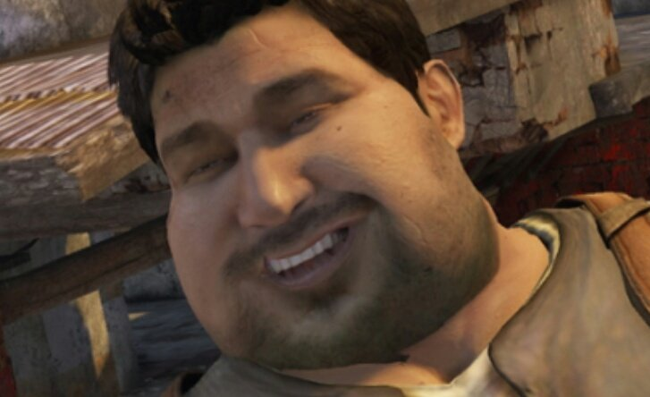

Marco Polo: Em Uncharted 2 e Uncharted 3, se você entrar em uma piscina (no hotel ou no navio), o Nate começa a brincar sozinho de "Marco Polo" e ganha um troféu por isso.

Voltar para a página inicial